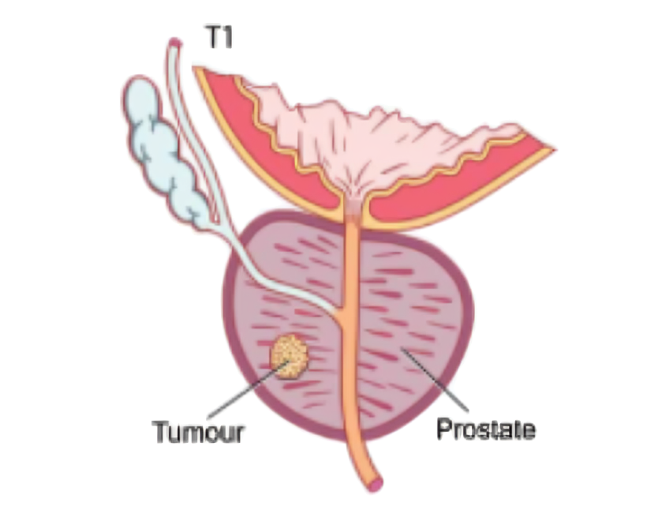
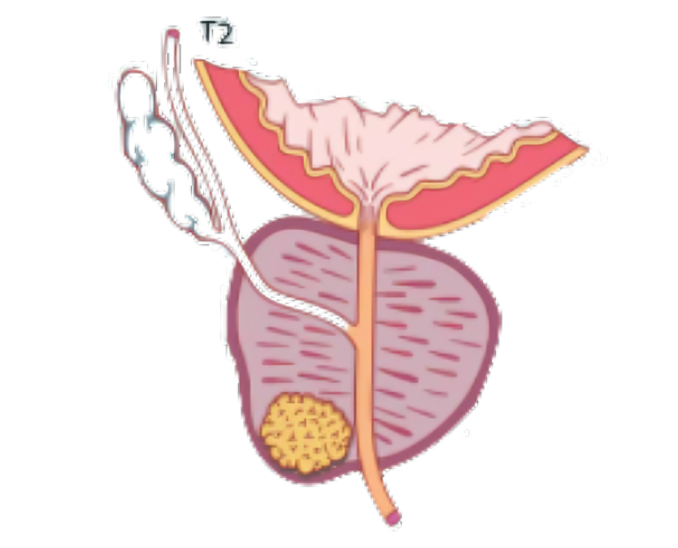
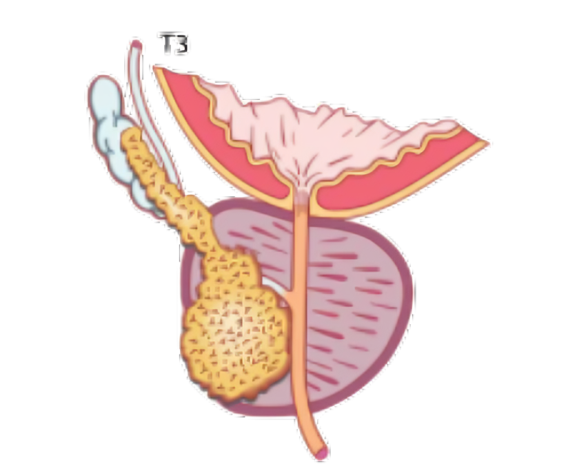
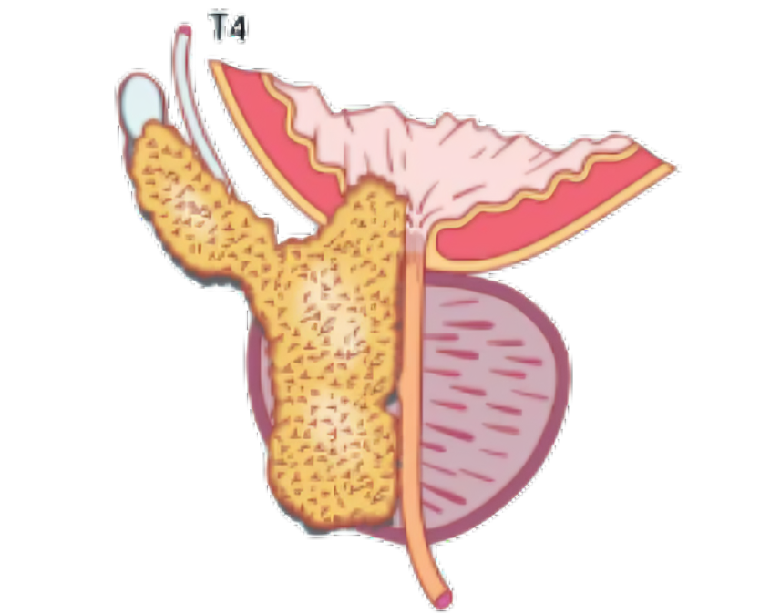

Knowing the stage of cancer is crucial.
Treatment teams must be aware of the prostate cancer's stage in order to plan, diagnose, and make well-informed healthcare decisions. It assists medical professionals in assessing the cancer's aggressiveness, extent, and propensity to spread, all of which have an impact on available treatments and the anticipated result.
Here's why it's critical to comprehend staging:
Planning for Treatment
The suggested type and intensity of treatment is directly influenced by the cancer's stage. For instance, active surveillance may be used to treat malignancies in their early stages, whereas more aggressive treatments like hormone therapy, radiation, or surgery may be needed for cancers in their advanced stages.
Prognosis
The patient's chances of survival and recovery are revealed by the stage. The survival rate of prostate cancer is significantly higher in its early stages than in its later stages.
Making Well-Informed Decisions
By using the stage information, patients can make more educated decisions about their care, talk with their doctor about treatment options, and gain a better understanding of their illness.
Observation and Follow-Up
Staging aids medical professionals in deciding the kind and frequency of follow-up examinations required to check for cancer spread or relapse.
Stages of Prostate Cancer
In New Zealand, healcare organisations use TNM System which indicate:
Stage T1
During a rectal examination, the tumor cannot be felt because it is limited to the prostate gland. The tumor is unlikely to produce any symptoms at this point. at the course of treating BPH, prostatitis, or other issues, tumors at this stage are frequently discovered by accident.
Treatment: Rediation therapy or radical surgery. Radiation therapy or drastic surgery may be suggested by your physician. In certain situations, it might make sense to forego therapy. Your doctor uses PSA tests and routine rectal exams to track the cancer's size and activity in place of surgery or radiation therapy. When and if necessary, treatment can then begin.
Stage T2
Despite being restricted to the prostate, the tumor is big enough to be felt during a rectal examination. Frequently, there are no symptoms.
Treatment: Radical surgery and/or radiation therapy. Depending on the patient’s age and health.
Stage T3
The tumour has spread to tissues touching, or adjacent to, the prostate. The glands that produce semen (seminal vesicles) may have cancer in them. Difficulty passing urine is a common symptom.
Treatment: Hormone therapy and radiation. Fatigue and hot flashes are common side effects.
Stage T4
In Stage T4, the tumor has spread to organs like the bladder, rectum, or pelvic side wall that are close to the prostate. Fatigue, weight loss, and bone discomfort are typical symptoms.
Treatment: Simple surgery to improve passing of urine (a transurethral resection of the prostate or TURP), or hormone therapy may be used. Patients usually have symptoms at this stage, and treatment is required.
Further Staging (N & M Stages)
Stage N0
There is no evidence that lymph nodes have cancer cells in them.
Stage N1
One or more lymph nodes have cancer cells in them.
Stage M0
There is no evidence that cancer has spread into distant parts of the body.
Stage M1
The cancer has spread (metastasised) into distant parts of the body.
Prostate cancer treatment side effect
Treatment for prostate cancer can have some negative effects. The adverse effects of treatment usually go away a few weeks after the completion of treatment.
The following side effects could occur, depending on your treatment:
Nerve damage: A bundle of nerves close to the bladder may be damaged during surgery which can cause problems with erections and bladder control.
Infertility: Because semen is no longer ejaculated during orgasm, infertility can result from surgery, cryotherapy, and radiation. You are unable to conceive biological offspring after experiencing what is known as a dry orgasm.
Bladder problems: Radiation treatment can irritate the lining of your bladder and urethra. You may notice:
It is normal to lose some bladder control (incontinence) after the catheter has been removed or after radiation treatment. Regular pelvic floor exercises can help with recovery.
Bowl problems: Radiation treatment can irritate the lining of your bowel and rectum (proctitis). You may notice:
Occasionally, you may experience pain and bleeding. With modern radiation techniques, bowel problems are much less common than they used to be.